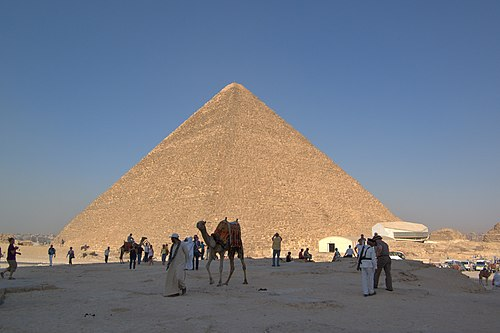
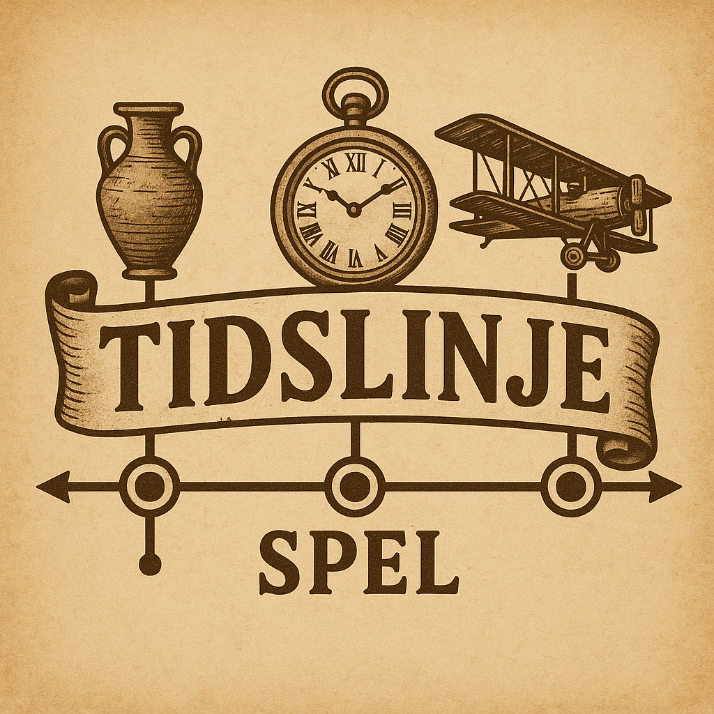

Matchning
Para ihop händelserna med rätt epok. Får du rätt visas en fördjupning.
Spela Matchning

Tidslinje
Dra och släpp händelser till rätt plats på tidslinjen. Se hur allt hänger ihop.
Spela Tidslinje